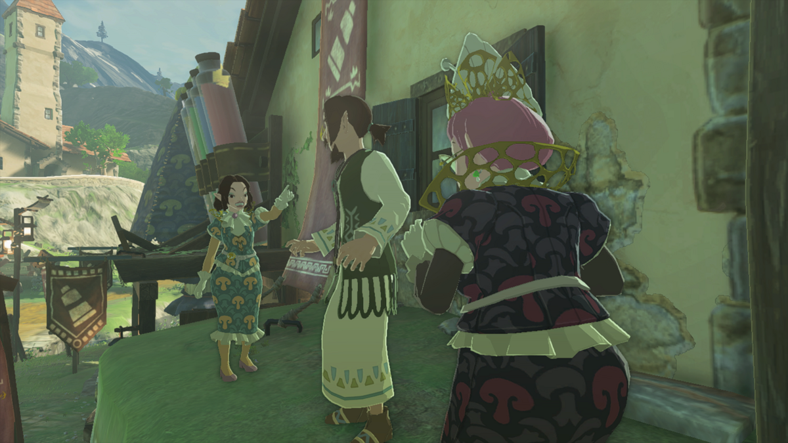
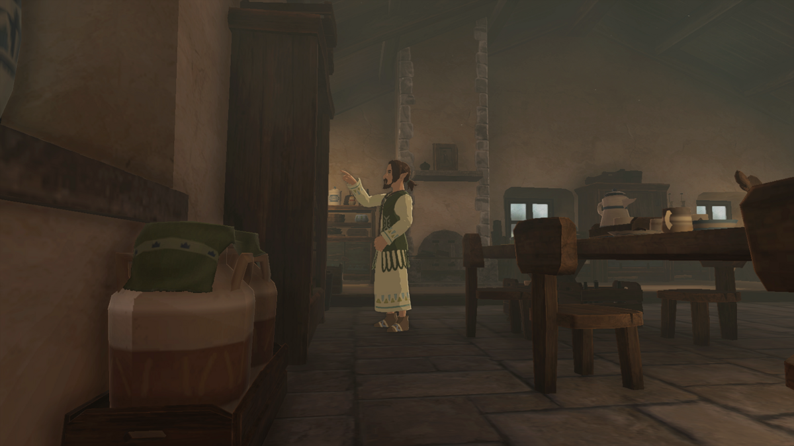

图：村长选举——时装设计师塞西回村开店，与村长里德吵到要靠选举定胜负。
先说结论：五项前置，一个晴天
本任务是哈特诺村长选举线的收尾。进服装店撞见塞西与里德吵架，选举线就此开始；先做完五项前置任务——支持塞西还是里德？、写给可音的信、新招牌料理、里德的秘密、塞西的秘密——再找个晴朗的白天去服装店门前找索菲娅，选举开场：两人互相揭了对方的秘密，反而和解了。结果是里德继续当村长，塞西的服装店重新开张，进店找塞西领塞西帽子。
| 阶段 | 要做的事 |
|---|---|
| 触发 | 进哈特诺村服装店，撞见塞西与里德吵架，塞西提议选村长 |
| 五项前置 | 送蘑菇、捞漂流瓶拿奶酪、帮里德想食谱、查里德的秘密、查塞西的秘密 |
| 开选举 | 五项全做完，晴朗的白天去服装店门前找索菲娅 |
| 收尾 | 看完选举剧情，进店找塞西领塞西帽子；服装店重新开张 |
接取与奖励
| 项目 | 内容 |
|---|---|
| 接取 | 五项前置任务全部完成，白天、天气晴朗时，到服装店门前与索菲娅交谈 |
| 位置 | 哈特诺村 · 塞西的服装店门前 |
| 奖励 | 塞西帽子（不可强化）；服装店重新开张，可买海利亚套装与近卫制服（单件） |
| 结果 | 里德继续担任村长，塞西留下来与他一起把村子搞好 |
选举没有输赢可选：不管一开始说支持谁，结局固定是里德连任。五项前置任务不用按固定顺序做，做完就行，但塞西的秘密与新招牌料理要先完成支持塞西那条线。
五项前置任务总览
| 前置任务 | 内容一句话 | 要点 |
|---|---|---|
| 支持塞西还是里德？ | 给村里 8 个人各送 1 个海拉鲁蘑菇 | 塞西给大生命松露 ×1 |
| 写给可音的信 | 去牧场捞起湖心漂流瓶，拿到哈特诺奶酪 | 哈特诺奶酪 ×1；详见单页 |
| 新招牌料理 | 把哈特诺奶酪交给里德，帮他想起失传的食谱 | 须先完成写给可音的信；奖励 100 卢比 |
| 里德的秘密 | 从村长家后面的水井用通天术进上锁的小屋，读里德的日记 | 里德在偷偷培育新品种南瓜 |
| 塞西的秘密 | 晚上 10 点出门后跟踪塞西到粮仓，爬墙偷听 | 塞西半夜偷吃村里种的蔬菜；奖励铁菇×10 |
第一步：支持塞西还是里德？
进服装店触发剧情：里德冲进来指责塞西的时装搅乱了村子，塞西当场提议选村长。再找塞西接任务，她让你帮她拉票：给村里 8 个人各送 1 个海拉鲁蘑菇。穿蘑菇衣服的人、孩子、里德的家人不算，剩下的 8 个人按下面这张表找。
| 送蘑菇的人 | 白天常去的地方 |
|---|---|
| 塔玛娜 | 村口附近 |
| 梅达 | 服装店后的番茄田 |
| 雷奥普 | 村里主路，布告栏附近 |
| 乌玛 | 学校附近的空地 |
| 沃顿 | 旅馆附近 |
| 邓茨 | 哈特诺牧场 |
| 可音 | 哈特诺牧场，湖边木栈道 |
| 托克 | 去研究所的路上 |
8 个人找齐送完，回服装店找塞西，她送你 1 个大生命松露。

图：支持塞西还是里德？——塞西发给你 8 个海拉鲁蘑菇，让你送给村里不支持她的人。
第二步：写给可音的信与新招牌料理
这两项是连着的。先去牧场找可音：砍树拼木筏捞起湖心漂流瓶，她按曾祖父的食谱做出哈特诺奶酪，送你 1 个（详见单页「写给可音的信」）。再拿奶酪去里德家找里德，他想起失传的祖传食谱，「新招牌料理」完成。

图：新招牌料理——里德想做出一道能代表村子的新招牌菜，缺的正是哈特诺奶酪。
第三步：里德的秘密
白天去里德家，找他的妻子克拉维娅接任务：她想知道里德整天锁在小屋里干什么。去村长家后面的水井，下到井底，走到小屋正下方用通天术穿上去，读桌上的日记：里德在偷偷培育新品种南瓜。回去告诉克拉维娅，任务完成。

图：里德的秘密——村长家后面那间上锁的小屋，得从水井下去、用通天术穿进去。
第四步：塞西的秘密
白天找服装店外的索菲娅接任务：她担心姐姐塞西半夜偷偷出门，怕影响选举。晚上 10 点她出门后跟着塞西，别被发现（9 点左右先去对面蹲点），她会进主路对面的粮仓并把门锁上；爬上粮仓外墙，从顶部小口钻进去偷听：她半夜来这里偷吃村里种的蔬菜。回去告诉索菲娅，任务完成。

图：塞西的秘密——晚上 10 点她出门后跟着她，别被发现，看她进了粮仓到底在干什么。
第五步：开选举，领帽子
五项前置任务全做完，找个晴朗的白天去服装店门前找索菲娅，让她开始选举。剧情里两人互相揭了对方的秘密，反而和解了：里德继续当村长，塞西留下来和他一起把村子搞好。结束后进服装店找塞西，她送你塞西帽子，任务完成。服装店重新开张，可以买海利亚套装与近卫制服（单件）；塞西帽子不能强化，戴着好看就行。
关键信息表
| 项目 | 内容 |
|---|---|
| 触发地点 | 哈特诺村 · 塞西的服装店（进店撞见两人吵架） |
| 五项前置 | 支持塞西还是里德？、写给可音的信、新招牌料理、里德的秘密、塞西的秘密（顺序不限，但塞西的秘密与新招牌料理要先完成支持塞西那条线） |
| 开选举条件 | 五项全做完；白天；天气晴朗；找服装店门前的索菲娅 |
| 选举结果 | 里德继续担任村长；塞西留下来与他一起把村子搞好 |
| 奖励 | 塞西帽子（不可强化）；服装店重新开张，可买海利亚套装与近卫制服（单件） |
| 送蘑菇名单 | 塔玛娜、梅达、雷奥普、乌玛、沃顿、邓茨、可音、托克（各 1 个海拉鲁蘑菇） |
容易翻车的地方
- 说支持里德——会被塞西赶出店，回去改口支持她才能接任务；选边不影响结局。
- 蘑菇吃掉了或做菜用了——没关系，任意渠道的海拉鲁蘑菇都算数。
- 找不齐 8 个人——他们白天黑夜位置会变，下雨天也会躲起来；按表上的常去地点找，晚上去旅馆和民居附近看看。
- 跟踪塞西被发现——离远点跟，别走到她正脸前面；她进粮仓锁门后从外墙顶部小口进去。
- 阴雨天找索菲娅——选举要晴天才开，下雨就先生火或睡觉等天晴。
- 以为塞西会赢——结局固定是里德连任，别纠结选边。
一句话总结
五项前置任务做完，晴朗白天找索菲娅开选举——里德连任、塞西留下来一起干，帽子归你，服装店重新开张。